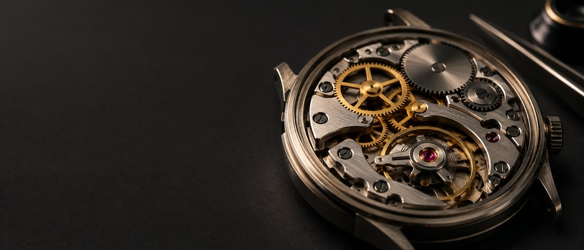
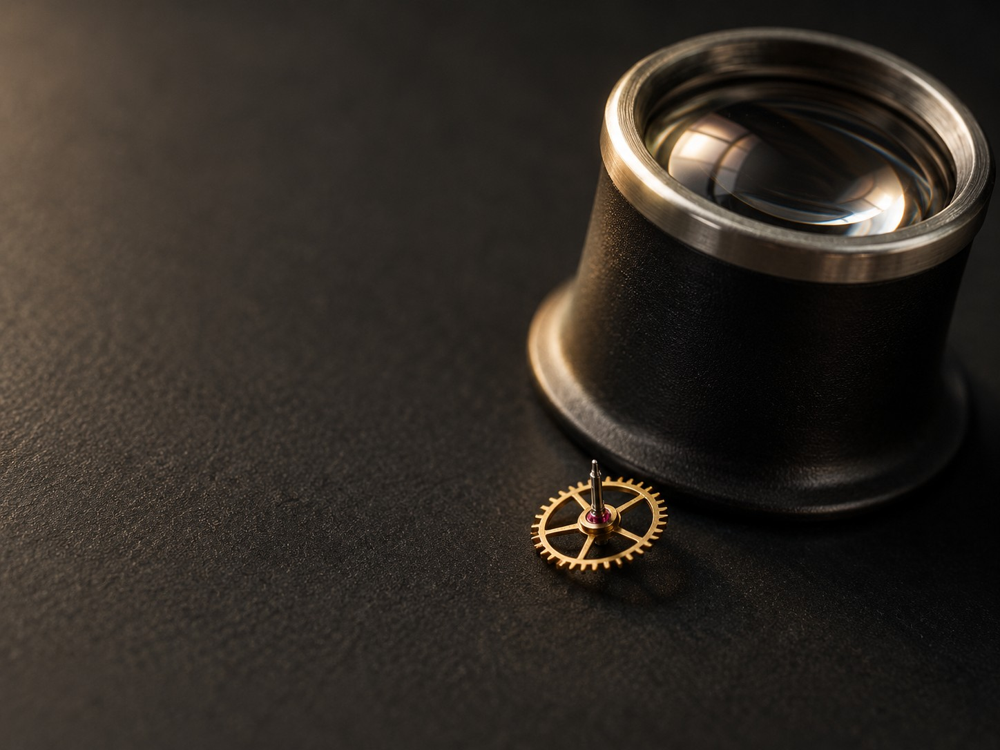

Open source
$0free for open-source projects
Install on GitHubAn AI code reviewer for GitHub
Relay reads every pull request, comments on the exact line, and learns your team's conventions from the review threads you resolve.
Free for open source. Team is USD 24 per developer a month.
for (let attempt = 0; attempt < MAX_ATTEMPTS; attempt++) { const res = await send(endpoint, signed(payload)); if (res.ok) return markDelivered(delivery.id);+ log.warn('webhook.failed', { status: res.status, attempt });+ if (res.status >= 400) {+ await sleep(backoff(attempt));+ continue;+ }This retries every 4xx, including 410 Gone and 401. In this repo, permanent failures are logged and dropped, not retried.
- if (res.status >= 400) {+ if (isRetryable(res.status)) {Learned from #3980 resolved by @mara.okafor
A sample review. The repository, people and thread numbers are fictional.
Every pull request, not a sample of them. The one-line dependency bump gets read too.
if (res.status >= 400) { await sleep(backoff(n)); continue;Retries 410 Gone. This repo drops permanent failures.
Not a wall of notes at the top of the pull request. The line, and the reason it matters here.

@mara.okafor We don't retry permanent failures. Log it and drop it.
Thread resolved
Convention: retry only 408, 429 and 5xx
Resolve a thread once. Relay reviews the next pull request with what your team decided.
Stop leaving the same comment on pull request after pull request. Settle it once in a thread, and Relay carries it into every review that follows.
Review standards stop living in two people's heads. They come from threads your engineers resolved, and they're applied on every pull request.

Conventions · orbit/billing-api
Each one links to the thread it came from.
Open-source projects never pay. Teams pay per developer, by the month.
$0free for open-source projects
Install on GitHub$24USD per developer, per month
Install on GitHubBoth plans: every pull request read, comments on the exact line, conventions learned from your resolved threads.
In the pull request, on the exact line it's talking about, the way a person reviewing in GitHub would.
From review threads your team has resolved. Relay learns how a discussion ended and applies that to later pull requests.
Yes. Relay reads every pull request, not a sample.
Nothing for open source. The Team plan is USD 24 per developer per month.
Staff engineers, who do much of a team's reviewing, and the engineering managers responsible for how review works.
No. Relay is fictional, made to show a design. The sample repository, people and thread numbers are invented for the product illustrations, and the proof slot is marked as a placeholder.